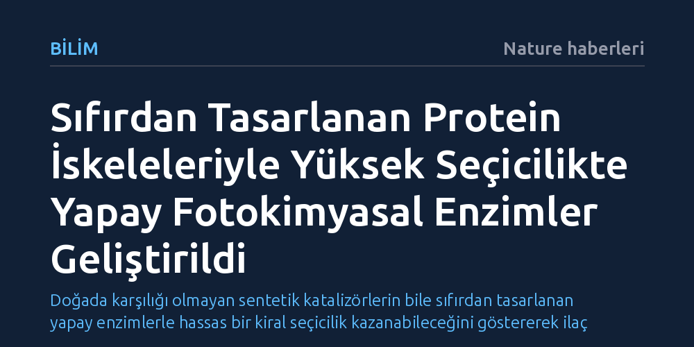

BILIM · Nature haberleri · 2026-10-22
Araştırmacılar, üretken protein tasarımı ve yönlendirilmiş evrimi birleştirerek sentetik metal komplekslerini yüksek derecede enantiyoseçici yapay fotokatalizör enzimlere dönüştürmeyi başardı. Geliştirilen de novo iskeleler, ışıkla tetiklenen tepkimelerde ticari rasemik katalizörlerle dahi hassas moleküler kontrol sağlıyor.
Doğada karşılığı olmayan sentetik katalizörlerin bile sıfırdan tasarlanan yapay enzimlerle hassas bir kiral seçicilik kazanabileceğini göstererek ilaç ve kimya üretiminde yeni bir çağ açıyor.

İlaç ve ince kimya endüstrisinde moleküllerin sağ veya sol elli olması, yani kiralitesi hayati önem taşır. Bir ilacın bir stereoizomeri tedavi edici etki gösterirken ayna görüntüsü olan diğer izomeri etkisiz veya zararlı olabilir. Görünür ışıkla tetiklenen fotokimyasal tepkimeler, moleküler bağları oda sıcaklığında ve düşük enerjiyle inşa etmenin en umut verici yollarından biridir; ancak basit metal fotokatalizörlerini yalnızca hedeflenen tek bir stereoizomeri üretecek şekilde yönlendirmek kimyacıların uzun süredir aşamadığı bir engeldi.
Bilim insanları bu sorunu çözmek için sentetik bir metal kofaktör ile protein iskeletini birleştiren yapay metaloenzimler (ArM) geliştirmeye çalışıyordu. Doğal bir protein kılıfının oluşturduğu üç boyutlu mikroçevre, teoride reaksiyona seçicilik kazandırabilirdi. Ne var ki doğada var olan proteinler, görünür ışık kimyasında yaygın kullanılan metal polipiridin kompleksleri gibi hacimli ve yapay yapılarla çalışacak şekilde evrilmemiştir. Mevcut proteinleri geleneksel deneme-yanılma yöntemleriyle modifiye etme çabaları, araştırmacıları işlevsel kısıtlar ve yetersiz stereoseçicilikle karşı karşıya bırakıyordu.
Bu kısıtlamayı aşmak isteyen araştırma ekibi, doğada hazır bulunan proteinlere bel bağlamak yerine üretken protein tasarımı algoritmalarına başvurdu. Bilgisayar destekli bu yöntemle, hedeflenen sentetik metal fotokatalizör molekülünü tam olarak saracak ve onu seçici olarak bağlayacak yepyeni protein iskeleleri sıfırdan (de novo) modellendi. Yapay zekanın tasarladığı bu iskeleler, doğadaki hiçbir protein dizilimine benzemeyen özgün bir katalitik cep sundu.
Ancak yalnızca bilgisayar ortamında tasarlanan bir iskelet tek başına nihai verimlilik ve hassasiyeti sağlamak için yeterli değildi. Araştırmacılar, elde edilen yapay metaloenzimleri laboratuvarda yönlendirilmiş evrim sürecine tabi tuttu. Doğadaki evrimsel seçilim mekanizmasını laboratuvar ortamında hızlandırılmış olarak tekrarlayan bu strateji, proteini mutasyonlar yoluyla adım adım optimize ederek son derece verimli, kararlı ve yüksek oranda enantiyoseçici bir fotokatalizöre dönüştürdü.
Tasarlanan yapay enzimlerin sergilediği başarının arkasındaki moleküler mekanizma, yapılan ayrıntılı spektroskopik analizlerle aydınlatıldı. Normal şartlarda çözelti içinde serbest halde bulunan bir fotokatalizör, ışığı soğurduktan sonra uyarılmış durumda çok kısa bir süre kalabilir ve enerjisini kontrolsüz biçimde çevreye dağıtır. Oysa sıfırdan tasarlanan protein cebi, fotokatalizörün bu uyarılmış durum ömrünü belirgin biçimde uzatmayı başardı.
Ayrıca protein cebi, reaksiyona girecek substratı kofaktörün hemen yanına kusursuz bir geometrik uyumla yerleştirdi. Bu hassas düzenleme, moleküller arasındaki enerji transferini rastgele olmaktan çıkarıp tek bir yönde ve hedeflenen kiral yüzey üzerinden gerçekleşmeye zorladı. Böylece reaksiyon sonucunda molekülün istenmeyen ayna görüntüsünün oluşması engellenerek olağanüstü bir stereoseçicilik elde edildi.
Geliştirilen bu hibrit katalizörlerin en çarpıcı yönlerinden biri, piyasada ticari olarak ucuza satılan rasemik metal karışımlarıyla dahi doğrudan çalışabilmesidir. Enzim, kiral olmayan ya da karışık haldeki metal komplekslerini kendi özel cebine seçici olarak kabul ederek reaksiyonu yüksek saflıkla yürütüyor. Yüksek katalizör döngü sayısına sahip olan ve defalarca geri dönüştürülebilen bu enzimler, endüstriyel ölçekte sürdürülebilir kimyasal sentezler için büyük bir potansiyel barındırıyor.
Bu buluş, biyolojik evrimin sınırlarını aşarak doğada hiçbir zaman var olmamış kimyasal reaksiyonları sıfırdan tasarlanan protein mühendisliğiyle kontrol altına alabileceğimizi kanıtlıyor. De novo tasarım ile yönlendirilmiş evrimin güçlerini birleştiren bu çok katmanlı yaklaşım, geleceğin ilaç etken maddelerinin güneş ışığı altında ve çevre dostu yapay enzimlerle üretilmesinin önünü açıyor.